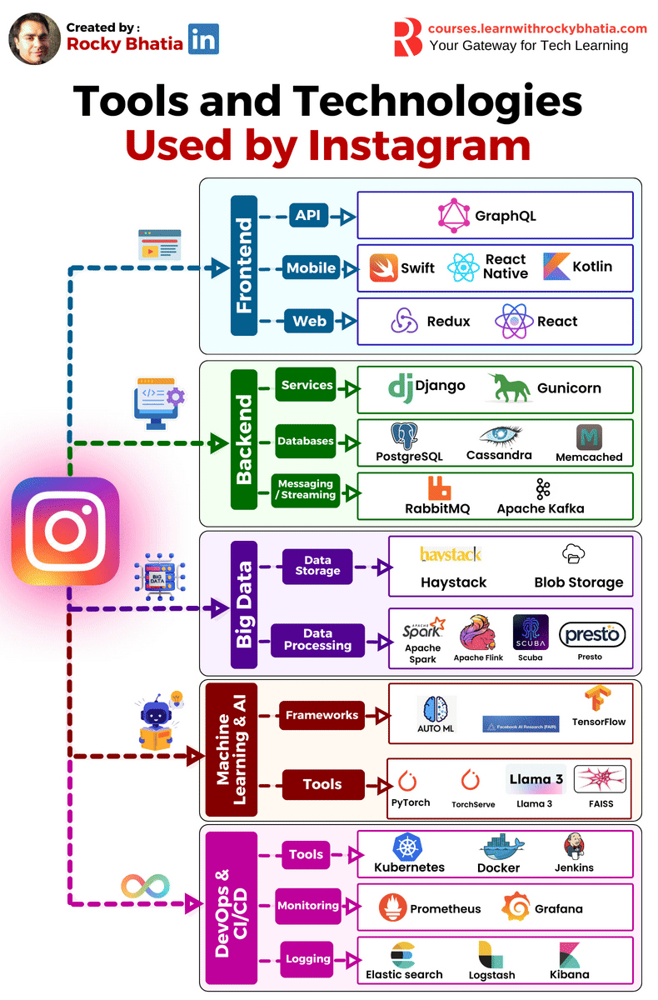

Instagram: Major Tools

Instagram-style Stack — The Clear Guide (What • Why • When • How)
Below is a step-by-step, beginner-friendly guide to every tool in the diagram. We’ll go layer by layer. For each tool you’ll see: What it is, Why it’s used, When to choose it, and How it typically works (with quick examples/analogies). Where helpful, I’ll tie it to familiar Instagram features (feed, stories, reels, search, etc.).
Big picture: how a request flows
[Mobile/Web UI]
│ GraphQL
▼
[Backend services: Django + Gunicorn]
│ (cache hits in Memcached)
│ (messages to RabbitMQ/Kafka)
▼
[Databases: PostgreSQL, Cassandra] [Object/Blob storage: photos/videos]
│ │
└──► Events/Logs ► Kafka ► Flink/Spark ► Presto/Scuba (analytics)
│
└► Train/serve ML (PyTorch/TensorFlow via TorchServe)
│
Personalised Feed/Explore/Search
🟦 Frontend
1) GraphQL
- What: API query language + server runtime. Clients ask exactly for the fields they need.
- Why: Prevents over-fetching (downloading too much) and under-fetching (too little), ideal for complex screens (e.g., feed cards with author, caption, like state).
- When: Many UI variants; mobile and web share the same data graph; evolution without breaking clients.
- How: Define a schema (
types,queries,mutations). Client sends a query; server resolves fields by calling backend services/DB. - Example: Feed screen fetches
{ posts { id, imageUrl, likedByMe, author { name, avatar } } }instead of multiple REST calls. - Key principles: Strongly typed schema; resolvers; N+1 query pitfalls handled with data-loader/batching.
2) React (Web)
- What: Component library for building UIs.
- Why: Reusable components (PostCard, CommentList), virtual DOM for efficient updates.
- When: Large interactive web apps (instagram.com).
- How: State/props drive rendering; effects for async work.
- Analogy: Lego blocks: small pieces combine into complex UIs.
3) Redux (Web state management)
- What: Predictable global state container.
- Why: Multiple components need the same state (auth, notifications, toasts).
- When: App-wide state shared across distant components.
- How: Single store; dispatch actions; pure reducers update state; components select slices.
- Principle: Single source of truth; immutable updates; time-travel debugging.
4) Swift (iOS) & 5) Kotlin (Android)
- What: Native languages for iOS/Android apps.
- Why: Top performance, access to device APIs (camera, video, GPU), smooth scrolling for feeds/reels.
- When: Performance-critical views (camera, reels player).
- How: MVVM/MVI patterns, coroutines (Kotlin) or async/await (Swift).
- Example: Recording & uploading a Story with background upload and UI progress.
6) React Native (cross-platform)
- What: Use React to build native mobile UIs.
- Why: Share code across iOS/Android for non-critical screens (settings, profile edit).
- When: Faster iteration where full native isn’t required.
- How: JavaScript talks to native UI primitives via a bridge / new architectures (Fabric, TurboModules).
🟩 Backend (Core Services)
7) Django (Python web framework)
- What: Batteries-included framework (ORM, auth, routing).
- Why: Rapid development, clean architecture, strong ecosystem.
- When: API services, admin panels, business logic.
- How: Views/DRF endpoints call ORM; serialize to GraphQL/JSON; enforce auth/permissions.
- Example: Endpoints for posting photos, comments, likes.
8) Gunicorn (WSGI server)
- What: Production HTTP server for Python web apps.
- Why: Concurrency & process management in front of Django.
- When: Serving Python apps behind Nginx/Load Balancer.
- How: Pre-fork workers;
workers ≈ 2–4 × CPU cores(tune with load tests).
9) PostgreSQL (relational DB)
- What: ACID SQL database.
- Why: Strong consistency, joins, transactions (users, posts, comments).
- When: Structured relationships; integrity constraints.
- How: Normalized schemas, indexes, read replicas for scale.
- Example: “Insert a comment; increment post’s comment_count in a transaction.”
- Principles: Transactions, indexes (B-tree, GiST), query plans.
10) Cassandra (NoSQL, wide-column)
- What: Distributed, partitioned, highly available store.
- Why: Massive write throughput and horizontal scale (likes, follows, activity).
- When: Availability > strong consistency; time-series/high-volume patterns.
- How: Data model around partition keys; tune replication factor and consistency level. QUORUM = floor(RF/2) + 1.
- Analogy: Many mailboxes (partitions); each holds rows ordered by time.
11) Memcached (in-memory cache)
- What: Key–value cache in RAM.
- Why: Sub-millisecond reads to offload databases (feed prefetch, session lookups).
- When: Hot data, expensive queries, rate-limited resources.
- How: Cache-aside pattern: check cache → compute/fetch on miss → set with TTL. Track hit ratio.
12) RabbitMQ (message broker)
- What: Broker with exchanges and queues.
- Why: Decouple background work (email, push, thumbnailing).
- When: Reliable task queues; routing by topic.
- How: Producer → exchange (direct/topic/fanout) → queue → consumer acknowledges.
- Example: “New like” -> queue → async push notification.
13) Apache Kafka (event streaming)
- What: Distributed commit log for high-throughput streams.
- Why: Real-time pipelines (activity events, live metrics), replayable history.
- When: Many producers/consumers; large sustained throughput.
- How: Topics split into partitions; consumers in a group read in parallel; offsets track progress.
- Principle: Throughput scales with #partitions × broker I/O.
🟪 Big Data (Storage & Processing)
14) Haystack (Meta’s photo/object store)
- What: Large-scale object store optimized for media (used at Meta).
- Why: Efficient storage & retrieval for billions of images/videos.
- When: Media-heavy platforms with CDN integration.
- How: Sharded storage; metadata lookup → blob fetch; write-once objects.
15) Blob/Object Storage (e.g., S3-like)
- What: Durable, cheap storage for unstructured objects.
- Why: Store photos, videos, thumbnails, stories.
- When: Any static media or large files.
- How: PUT/GET by key; lifecycle rules (tiering, deletion); presigned upload URLs from mobile.
16) Apache Spark (batch processing)
- What: Distributed compute engine for batch analytics & ML.
- Why: Process TB–PB of data (engagement, ad metrics, training sets).
- When: Nightly jobs, feature generation, ETL.
- How: Build a DAG; lazy DataFrame transformations; actions trigger computation.
- Principles: In-memory processing; partitioning; shuffle costs.
17) Apache Flink (stream processing)
- What: Stateful, low-latency stream processor.
- Why: Real-time counters (trending reels), fraud/spam detection, online features.
- When: Millisecond–second latency needs on continuous data.
- How: Event-time windows (tumbling/sliding), exactly-once semantics with checkpoints.
18) Scuba (Meta internal analytics)
- What: Interactive, near-real-time analysis tool for engineers.
- Why: Quick slice-and-dice of operational metrics (“upload failures last 10 min?”).
- When: On-call, debugging, product analytics.
- How: Pulls from event streams/logs; fast aggregations.
19) Presto/Trino (distributed SQL)
- What: MPP query engine for interactive SQL over data lakes.
- Why: Query across Hive/S3/Kafka/… without moving data.
- When: Ad-hoc analyses, dashboards, product questions.
- How: Coordinator plans query; workers process splits in parallel; results streamed back.
🟥 Machine Learning & AI
20) AutoML (automation of model selection/tuning)
- What: Tools that search pipelines/hyperparameters automatically.
- Why: Faster iteration for teams without deep ML specialization.
- When: Baselines, rapid A/B ideas, tabular problems.
- How: Try algorithms → evaluate → pick best; export deployable model.
21) FAIR research & ecosystem (Meta)
- What: Research driving recsys, vision, language; many libraries feed into PyTorch stack.
- Why: State-of-the-art ranking/retrieval for Feed/Explore/Reels.
- When: You need cutting-edge performance at scale.
- How: Advanced losses, architectures, distillation, large-scale training.
22) TensorFlow
- What: Deep learning framework.
- Why: Mature tooling; often used for CV/NLP and mobile (TF-Lite).
- When: Image moderation, spam detection, on-device inference.
- How: Define graphs/keras models; train on GPUs/TPUs; export SavedModel.
23) PyTorch
- What: Dynamic deep learning framework (Meta-origin).
- Why: Research-friendly and production-ready; Instagram/Meta widely use it.
- When: Ranking models, embeddings, multi-task learning.
- How:
nn.Modulemodels; Autograd; distributed training (DDP/FSDP).
24) TorchServe (serving)
- What: Model server for PyTorch.
- Why: Easy, scalable inference endpoints with batching & versioning.
- When: Deploying models behind APIs.
- How: Package model as .mar; define handlers; autoscale workers.
25) LLaMA 3 (large language model)
- What: Meta’s generative LLM for NLP.
- Why: Moderation, safety filtering, creator tools, support assistants.
- When: Text understanding/generation tasks.
- How: Prompt → tokens → decoder output; fine-tune/adapt with LoRA/RLHF.
26) FAISS (vector search)
- What: Library for fast nearest-neighbor search in high-dim spaces.
- Why: “Find similar” reels/images/users at scale.
- When: Retrieval for recommendations and search.
- How: Build vector embeddings; index with IVF/HNSW/Flat; query by cosine/L2.
Cosine similarity:
cos(θ) = (A·B) / (||A|| · ||B||).
🟨 DevOps & CI/CD
27) Docker (containers)
- What: Package app + deps into portable images.
- Why: Same environment across dev/stage/prod.
- When: Microservices; reproducible builds.
- How: Layered images; copy-on-write; run as isolated containers.
28) Kubernetes (orchestration)
- What: Schedules and manages containers across clusters.
- Why: Self-healing, scaling, service discovery, rollouts.
- When: Many services, high availability needs.
- How: Deployments (desired state) → ReplicaSets/Pods; Services/Ingress expose; HPA autoscaling based on CPU/QPS.
29) Jenkins (CI/CD)
- What: Automation server for build/test/deploy.
- Why: Consistent pipelines; gated releases.
- When: Frequent merges, multi-stage delivery.
- How: Pipeline-as-code (
Jenkinsfile), agents run jobs, promote artifacts.
30) Prometheus (monitoring)
- What: Time-series metrics & alerting.
- Why: Catch latency/error spikes quickly.
- When: You need numeric telemetry with labels.
- How: Services expose /metrics; Prometheus scrapes; Alertmanager sends pages. Metric types: Counter, Gauge, Histogram, Summary.
31) Grafana (dashboards)
- What: Visualization for metrics & logs.
- Why: Insightful dashboards for SRE/product teams.
- When: Build NOC boards, SLO views.
- How: Query Prometheus/Elastic; alerts & annotations.
32) Elasticsearch (search & logs)
- What: Distributed search/analytics engine using an inverted index.
- Why: Fast log search, text queries.
- When: Centralized logging, operational search.
- How: Ship JSON docs → index; query with DSL; aggregate with facets.
33) Logstash (ingest) & 34) Kibana (visualize) — the ELK stack
- What: Logstash parses/ships logs; Kibana explores/visualizes.
- Why: Full pipeline from app logs → searchable visuals.
- When: Troubleshooting, security auditing.
- How: Beats/Logstash → Elasticsearch → Kibana dashboards & saved searches.
Practical tie-ins (feature examples)
- Feed/Reels ranking: PyTorch models served by TorchServe; candidate retrieval via FAISS; events via Kafka; features computed in Flink/Spark; results fetched through GraphQL → React/Swift/Kotlin UIs.
- Search/Explore: Vector search (FAISS) + text search (Haystack/Elastic); analytics via Presto; stream updates via Flink.
- Notifications: Django emits events → RabbitMQ/Kafka → workers send pushes/emails; Cassandra stores high-volume activity rows.
- Uploads: Mobile app uploads to object storage (presigned URL) → backend writes metadata to PostgreSQL/Cassandra → background jobs make thumbnails.
Two tiny mental models
Caching (Memcached)
Client → Cache → (hit) return
↘ (miss) DB → set TTL → return
Streams (Kafka → Flink)
Producers → Kafka Topic(partitions) → Flink job (windowing/state) → sinks (DB/Cache/Features)
Key definitions & principles (cheat sheet)
- ACID vs. Eventually Consistent: PostgreSQL gives strong ACID; Cassandra favors availability and scale with tunable consistency.
- Replication factor (Cassandra):
QUORUM = floor(RF/2) + 1for balanced reads/writes. - Cosine similarity (FAISS):
cos(θ) = (A·B) / (||A|| · ||B||)to measure content/user embedding similarity. - Kafka scaling: More partitions ⇒ more consumer parallelism.
- Prometheus: Counters only go up; use Histograms for latency SLAs (e.g., p95).
- Kubernetes: Controllers reconcile actual state to desired state (declarative).
Interview-style Questions
Basic
- GraphQL vs REST — pros/cons and a use case from a social feed.
- Why use Django with Gunicorn instead of running Django’s dev server in production?
- When would you choose PostgreSQL over Cassandra (and vice versa)?
- What is cache-aside? When would you invalidate vs. set short TTLs?
- What is a Kafka topic and a partition? Why do partitions matter?
- Difference between Spark (batch) and Flink (stream).
- What is object storage and why use it for media?
- What is Redux used for in a React app?
- What does “exactly-once” mean in stream processing?
- What are Prometheus Counters vs Gauges?
Intermediate
- Design an Instagram “like” system: schema choices in PostgreSQL vs Cassandra.
- Prevent N+1 queries in GraphQL resolvers — strategies?
- Tune Gunicorn worker/thread counts for a CPU-bound vs I/O-bound service.
- How would you compute and serve a personalized Explore page end-to-end?
- Explain Cassandra’s partition key and clustering columns with an example table.
- Describe a zero-downtime deployment on Kubernetes (readiness, liveness, rollouts).
- How to avoid cache stampede/thundering herd?
- Compare RabbitMQ (queues) with Kafka (streams) for notifications.
- Build a p95 latency dashboard for the upload API (Prometheus + Grafana design).
- How Presto executes a SQL query over S3-stored parquet data.
Advanced
- You must support 1M likes/minute: partitioning strategy (Kafka, Cassandra), idempotency, backpressure.
- Design vector search for “Similar Reels”: embedding generation, FAISS index choice (Flat vs IVF/HNSW), refresh cadence, cold-start handling.
- Event-time vs processing-time in Flink — why window skew happens and how to fix with watermarks.
- Training/serving skew for ranking models: how to detect and mitigate.
- Multi-region architecture: data placement, GraphQL gateway, consistency trade-offs.
- Cache consistency: write-through vs write-behind vs cache-aside — failure scenarios.
- Capacity planning: estimate Kafka topic partitions given producer rate, message size, and consumer parallelism.
- Observability for ML serving: features/outputs logging, shadow deployments, canary analysis.
- Handling GDPR “right to be forgotten” across object storage, indices, caches, embeddings.
- Designing SLOs & alerts for the reels playback pipeline (what signals, thresholds, burn-rate alerts).
If you want, I can turn this into a one-page printable cheat sheet (with the ASCII diagrams cleaned up) or a slide deck for interviews.